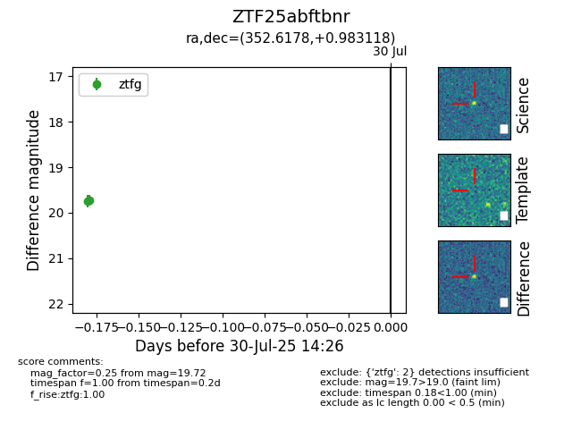

Target ZTF25abftbnr at 2025-07-30 14:26, see:
FINK: fink-portal.org/ZTF25abftbnr
Lasair: lasair-ztf.lsst.ac.uk/objects/ZTF25abftbnr
ALeRCE: alerce.online/object/ZTF25abftbnr
alt names
ZTF25abftbnr (ztf,fink)
coordinates:
equatorial (ra, dec) = (352.6178,+0.98312)
galactic (l, b) = (84.9483,-55.79968)
photometry
last ztfg=19.72
2 ztfg detections
